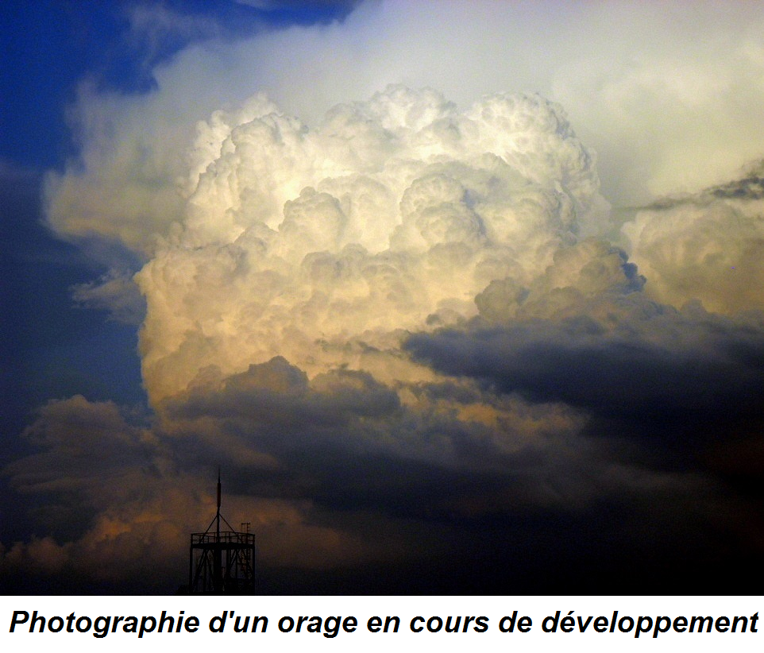

Description
Un orage peut se caractériser en trois grandes parties : une phase de développement, une autre de maturité et enfin une de dissipation.
Pour que l’orage se développe, il faut une grande ascendance d’air chaud. Cette ascendance peut s’observer dans deux situations : - Lorsque le sol est très chaud, principalement en été par temps sec avec un fort ensoleillement, on parle d’orage localisé - Lorsqu’un front froid est suffisamment important, on parle de front orageux Des vents ascendants très puissants, très souvent avec une vitesse supérieure à 30 m/s, vont alors se créer, formant un cumulonimbus qui peut atteindre jusqu’à 10 km d’altitude. Les gouttes de pluie formées dans celui-ci sont emportées par les vents ascendants et ne tombent pas.
La phase de maturité débute lorsque les vents ascendants ne sont plus assez puissants pour supporter l’énorme masse d’eau à l’état liquide et solide. Des précipitations commencent alors en s’intensifiant rapidement, sous forme de pluie ou de grêle, formant des courants descendants dans le nuage.
Les précipitations sous le nuage refroidissent progressivement la température en surface, jusqu’à ce qu’elle soit assez froide pour que les vents ascendants déclinent. La dernière phase de l’orage commence alors, celle de la dissipation. Lors de celle-ci la vapeur d’eau à la surface monte de moins en moins jusqu’au nuage, le cumulonimbus se raréfie alors de plus en plus à mesure que les précipitations tombent. Il finit par se consumer entièrement et à disparaître. Un orage dure généralement quelques minutes, n’excédant pas une demi-heure.